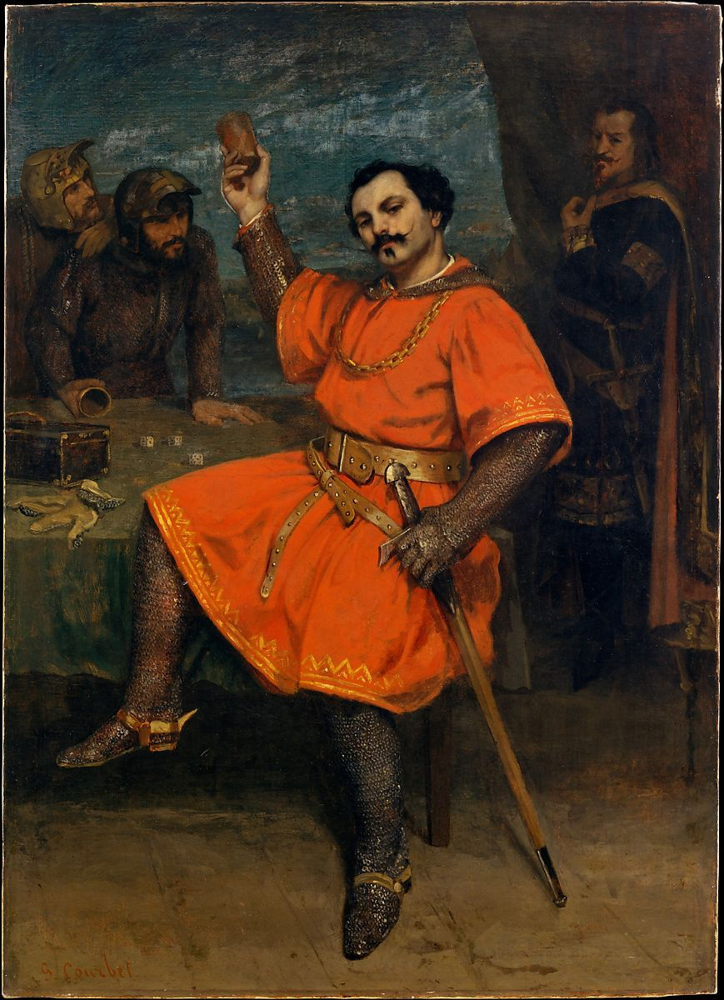

<head>
<meta charset="UTF-8" />
<meta name="keywords" content="drawing, painting" />
<meta name="description" content="drawings by Sunjy" />
<title>Sunjy</title>
<link rel="shortcut icon" type="image/x-icon" href="../../mImages/mCommon/favicon.ico" media="screen" />
<link rel="stylesheet" type="text/css" href="../../mCsses/mCommon/mCssA.css" />
<link rel="stylesheet" type="text/css" href="../../mCsses/mCommon/mCssB.css" />
<link rel="stylesheet" type="text/css" href="../../mCsses/mCommon/mCssC.css" />
<link rel="stylesheet" type="text/css" href="../../mCsses/mCommon/mCssD.css" />
<link rel="stylesheet" type="text/css" href="../../mCsses/mContent/mCssA.css" />
<link rel="stylesheet" type="text/css" href="../../mCsses/mContent/mCssB.css" />
<link rel="stylesheet" type="text/css" href="../../mCsses/mContent/mCssC.css" />
<link rel="stylesheet" type="text/css" href="../../mCsses/mContent/mCssD.css" />
</head>
<script type="text/javascript" src="../../mScripts/mContent/mContentAA.js" /></script>
<script type="text/javascript" src="../../mScripts/mContent/mContentAB.js" /></script>
<script type="text/javascript" src="../../mScripts/mContent/mContentAC.js" /></script>
<script type="text/javascript" src="../../mScripts/mContent/mContentAD.js" /></script>
<script type="text/javascript"></script> 
<script type="text/javascript">
document.write('<div class="mImgAbsolute"></div>');
/*
document.write('<p class="mFontSizeBColor" />From a white paper...</p>');
document.write('<table class="center"><tr><td>');
document.write('');
document.write('</td></tr></table>');
*/
</script>


<script type="text/javascript">
document.write('<p class="mFontSizeBColor" />Louis Gueymard as Robert le Diable</p>');
document.write('<p class="mFontSizeSColor" />By Gustave Courbet, 1857. This painting, shown at the Salon of 1857, depicts the tenor Louis Gueymard in his most famous part, the title role of Meyerbeer’s opera <i>Robert le Diable</i>. The setting is the cavern where Robert plays dice with two servants of the devil while his father Bertram, an evil genius, looks on. In this scene Robert sings about the dangers of the lust for gold in the celebrated aria <i>L’or est une chimère (Gold is but an illusion)</i>. </p>');
document.write('<table class="center" /><tr><td>');
document.write('Robert le Diable</i>. The setting is the cavern where Robert plays dice with two servants of the devil while his father Bertram, an evil genius, looks on. In this scene Robert sings about the dangers of the lust for gold in the celebrated aria <i>L’or est une chimère (Gold is but an illusion)</i>. " />');
document.write('</td></tr></table>');
</script>


